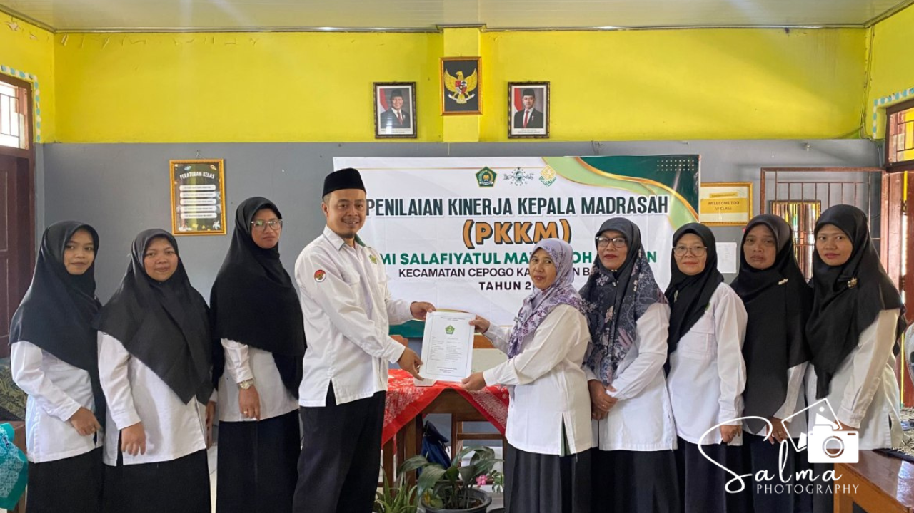

Selasa, 20 Oktober 2026, MI Salafiyatul Ma'muroh melaksanakan kegiatan Penilaian Kinerja Kepala Madrasah (PKKM) tahun 2026. Kegiatan ini merupakan bagian dari proses evaluasi berkala yang bertujuan untuk mengukur efektivitas, kualitas kepemimpinan, serta tata kelola administrasi di lingkungan madrasah.
Pelaksanaan PKKM pada tahun ini dinilai langsung oleh tim pengawas madrasah, yaitu Ibu Hj. Siti Mahmudah, S.Ag., M.Pd.I. dan Ibu Hj. Puji Nurjannah, S.Ag., M.Pd.I. Proses penilaian berlangsung dengan penuh khidmat dan ketelitian, mencakup berbagai aspek manajerial, pengembangan kewirausahaan, serta supervisi kepada guru dan tenaga kependidikan.
Dalam kesempatan ini, para pengawas memeriksa secara mendalam berbagai berkas pendukung dan dokumen administratif yang telah disiapkan oleh tim PKKM MI Salafiyatul Ma'muroh. Selain pemeriksaan dokumen, tim pengawas juga memberikan arahan serta evaluasi konstruktif demi kemajuan dan peningkatan mutu pendidikan di madrasah ke depan.
Seluruh rangkaian kegiatan PKKM 2026 berjalan dengan lancar dan tertib. Pihak MI Salafiyatul Ma'muroh mengucapkan terima kasih atas bimbingan dan masukan yang diberikan oleh para pengawas, serta berharap hasil penilaian ini dapat menjadi pijakan untuk terus berbenah dan memberikan layanan pendidikan terbaik bagi masyarakat.
← Kembali ke Beranda